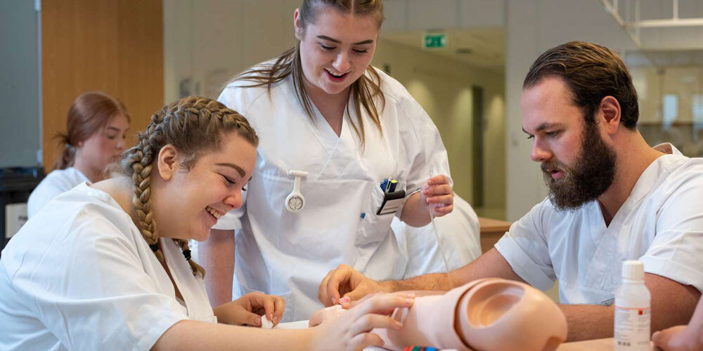
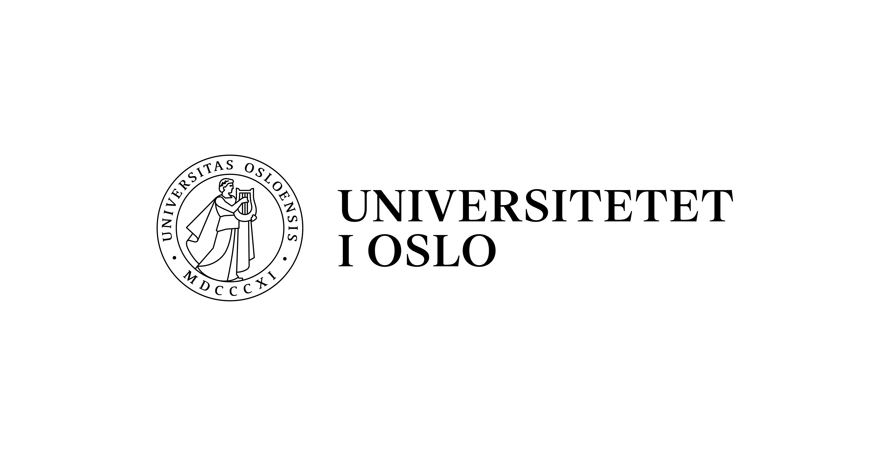
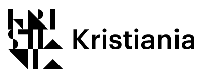

Studiemuligheter ved OsloMet
Les mer om både våre og andres studietilbud på her.
Fotografi: Kim-Ramberghaug/NTNU
Det kan være overveldende å begi seg ut på livet som student, enten du kommer rett fra videregående eller har annen erfaring fra før. Både i Norge og i utlandet finnes det utallige studiemuligheter, som alle har sine egne særegenheter og spesifikasjoner. Ved noen studieinstitusjoner må man betale for å være student. Disse er privat drevet og drives på inntekter fra studentene som går på skolen. Eksempler på slike læresteder er BI, Høyskolen Kristiania og Noroff. Andre institusjoner er tilnærmet gratis å gå på, da disse er subsidiert av staten. OsloMet, NTNU og UiO er eksempler på slike statlige drevet universiteter. Forskjellen på et universitet og en høyskole er ikke like stor i dag som den var for bare noen tiår siden. Mens universiteter har en mer akademisk orientering, vil en høyskole i større grad vektlegge praksis. I tillegg har høyskolene typisk mindre klasser og færre studenter enn det universitetene har. Det er dog små forskjeller mellom disse læringsinstitusjonene, men visse trekk henger enda igjen. I Oslo finnes det et stort tilbud for høyere utdanning til potensielle studenter. Noen institusjoner er blant annet UiO, OsloMet, Høyskolen Kristiania, Noroff, Oslo Nye Høyskole, Lovisenberg, BI, fagskoler og andre mer yrkesrettede skoler. De største aktørene er UiO, OsloMet og Høyskolen Kristiania. Av disse er det kun Høyskolen Kristiania som er drevet privat. Her vil man derfor måtte betale skoleavgift for å ta fag. Mer om dette kan leses på Høyskolen Kristianias egen nettside. Både UiO og OsloMet er derimot offentlige og statlig drevet. Her betales semesteravgift, som dekker det administrative gebyret for å melde studentene opp til emner og eksamen. Denne avgiften er under tusen kroner og betales i forkant av hvert semester via faktura. Dersom du har spørsmål vedrørende semesteravgift, er du velkommen til å kontakte oss via vårt kontaktskjema. På denne siden kan du lese mer om OsloMets studietilbud innen ulike retninger, samt utvalgte studietilbud fra andre institusjoner i Oslo. Vi på OsloMet har stor tro på at vi har et studietilbud til alle, ettersom vi tilbyr over 350 studieretninger. Skulle du likevel ikke finne noe som frister hos oss, vil vi hjelpe deg på vei til å finne andre tilbud som muligens passer deg bedre. Dersom du ikke ønsker å studere i Oslo finnes det en rekke andre universiteter og høyskolen du kan søke plass til. Disse er både lokalisert i byer som Bergen, Trondheim og Tromsø, men også på mindre steder som Volda, Bø i Telemark og Levanger. Høyere utdanning skal være tilgjengelig der det er behov, og vi ønsker å tilrettelegge for at flest mulig skal kunne ta høyere utdannelse innen et felt som de interesserer seg for.
Studietilbud:
Faktultetet for helsevitenskap
Fotografi: Universitetet i Agder
Her tilbys over 60 utdannelser, blant annet:
- Bioingeniør
- Ergoterapi
- Fysioterapi
- Sykepleie
- Radiografi
- Masterutdannelse til disse bachelorgradene
Klikk på bildet for mer informasjon.
Faktultetet for samfunnsvitenskap
Fotografi: OsloMet Storbyunisersitetet
Her tilbys 80 retninger, blant annet:
- Arkivvitenskap
- Barnevern
- Journalistikk
- Sosialt arbeid
- Økonomi og administrasjon
- Masterutdannelse til disse bachelorgradene
Klikk på bildet for mer informasjon.
Faktultetet for lærerutdanning og internasjonale studier
Fotografi: Siri Øverland Eriksen
Her tilbys mer enn 150 utdannelser, blant annet:
- Barnehagelærer
- Grunnskolelærerutdanning
- Spesialpedagogikk
- Tegnspråk
- Trafikklærer
- Videreutdannelser til disse og en rekke andre, grader
Klikk på bildet for mer informasjon.
Faktultetet for teknologi, kunst og design
Fotografi: OsloMet Storbyuniversitetet
Her tilbys omtrent 60 utdannelser, blant annet:
- Anvendt datatenkologi
- Bioteknologi
- Byggingeniør
- Dataingeniør
- Kunst og design
- Masterutdannelse til disse bachelorgradene
Klikk på bildet for mer informasjon.
Universitetet i Oslo
Logo: Universitetet i Oslo
Her tilbys en rekke utdannelser innen en lang rekke områder:
- Informatikk
- Odontologi og medisin
- Psykologi
- Filosofi
- Statsvitenskap
- Juss
Klikk på logoen for mer informasjon.
Høyskolen Kristiania
Logo: Høyskolen Kristiania
Her tilbys en rekke utdannelser, både som fysisk studie og nettstudie:
- Grafikk
- Administrasjon og ledelse
- Folkehelsearbeid
- Anvendt psykologi
- Biomedisin
- Human resources
Klikk på logoen for mer informasjon.
Oslo Nye Høyskole
Fotografi: Universitetet i Agder
Her tilbys mange studieretninger, flere kan tas over nett:
- Human resources
- Anvendt psykologi
- Markedsføring og ledelse
- Ernæring
- Statsvitenskap
- Miljøterapi
Klikk på logoen for mer informasjon.
Norges miljø- og biovitenskapelige universtitet
Logo: NMBU
Universitetet har et mangfoldig studietilbud, blant annet:
- Veterinær
- Bioteknologi
- Datavitenskap
- Agronomi
- Husdyrvitenskap
- Ingeniørfag
Klikk på logoen for mer informasjon.
Norges tekniske- og naturvitenskapelige universitet

Logo: NTNU
Her tilbys over 500 retninger, blant annet:
- Informatikk
- Datateknologi
- Odontologi og medisin
- Sykepleie
- Ingeniørfag
- Lærerutdannelse
Klikk på logoen for mer informasjon.